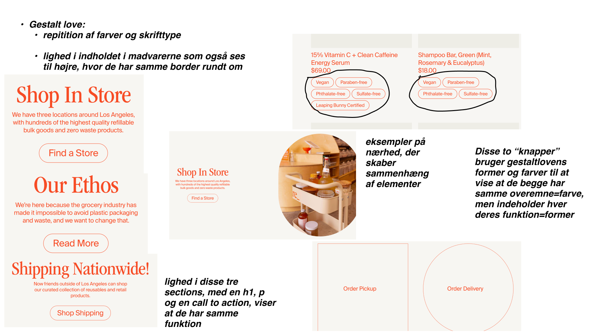

WEBSITE
Jeg har lært at tilpasse et mobilsitet til også at fungere på desktop ved at følge en udleveret wireframe og layoutdiagram. Jeg har arbejdet med opdeling af CSS i to dokumenter til styling og layout. Derudover har jeg lært at uploade websitet korrekt til mit eget domæne.
WEBSITE →MOBILSITE
Jeg har lært at opbygge en grundstruktur til et mobilvenligt website med fem HTML-sider og en navigationsmenu. Jeg har arbejdet med mobile-first design ud fra et wireframe og layoutdiagram og brugt margin og padding til at skabe en pæn opsætning. Jeg har også lært at indsætte billeder i god opløsning, anvende to fonte og farver, og sikre, at koden validerer. Derudover har jeg brugt meta-tags til at forhindre søgemaskineindeksering.
MOBILSITE →HTML ØVELSER
De her HTML øvelser har lært mig at lave header, main og footer. I headeren har jeg tilføjet en global menu ved hjælp af "nav" -elementet og en unordered liste. Jeg har arbejdet med at oprette et website med fire sider: index.html, info.html, produkter.html og about.html. Jeg har også arbejdet med "section" og "article" elementer, samt lært at bruge "aside" elementet i en "article".
HTML ØVELSER LINK →CSS ØVELSER
CSS øvelserne har lært mig at arbejde med margin, padding, centrering, baggrundsfarver, border og box-shadow i CSS. Jeg har også lært at lave et "card" ved at bruge et billede og tekst. Jeg har også fået en introduktion til flexbox.
CSS ØVELSER →DESIGN ØVELSER
Gennem disse øvelser har jeg lært at analysere et eksisterende website og identificere de virkemidler og designprincipper, der er brugt. Jeg har også lært at oprette et Style Tile i Figma, hvor jeg har defineret de enkelte designelementer som farver, fonte og størrelser. Endelig har jeg lært at overføre dine designbeslutninger til en wireframe ved hjælp af billeder fra “Heroimages”.
 DESIGN ØVELSER →